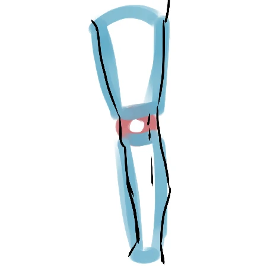

comment dessiner le bas du corps
Le bas du corps est un peu
plus simple et peut s'apprendre
grâce aux studys (car il n'y a
finalement que deux jambes et un
bassin). Je vais quand même vous
apprendre les bases pour que vous
compreniez mieux comment tout cela
peut être dessiné avec des
techniques simples.
Si vous avez bien lu et appris le
cours précédent, vous devriez
normalement pouvoir dessiner les
jambes avec les mêmes formes
géométriques que les bras. Voyons
ça dès maintenant ci-dessous !

Sur ce dessin, nous pouvons voir que la cuisse est dessiné par un cylindre épais, que l'articulation du genou est marquée par un rond et que le mollet est tracée avec un cylindre plus fin que celle du haut.
Je vous rassure tout de suite : vous
n'aurez même plus besoin de
dessiner les cylindres lorsque
vous aurez atteint un certain
niveau. Vous remarquerez que
vous dessinerez directement la
jambe en vous servant simplement
des ronds comme repères.
Pour toute incompréhension du cours,
n'hésitez pas à m'en faire part
sur le serveur discord, dans le
salon dédié.